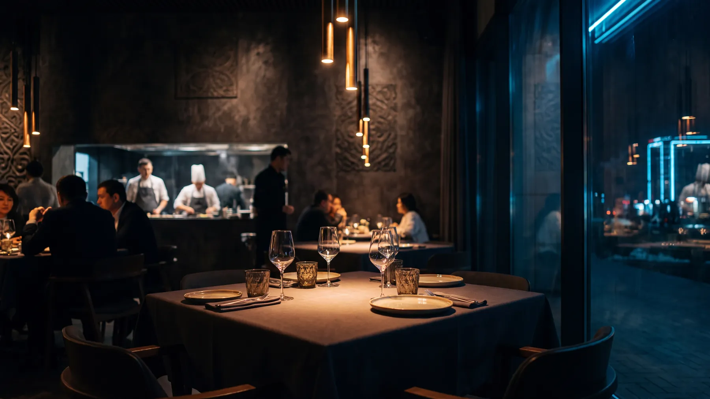

Грузинский ресторан · 2 города
ХочуПури — мини-приложение в Telegram
Меню с фото и ценами, корзина, бронь столика, баллы гостю — и игры, пока готовят заказ. Гость ничего не устанавливает: открывает ресторан прямо в мессенджере.
- Два филиала в одном приложении
- Заказ, бронь и программа лояльности
- Аркада и викторина на время ожидания